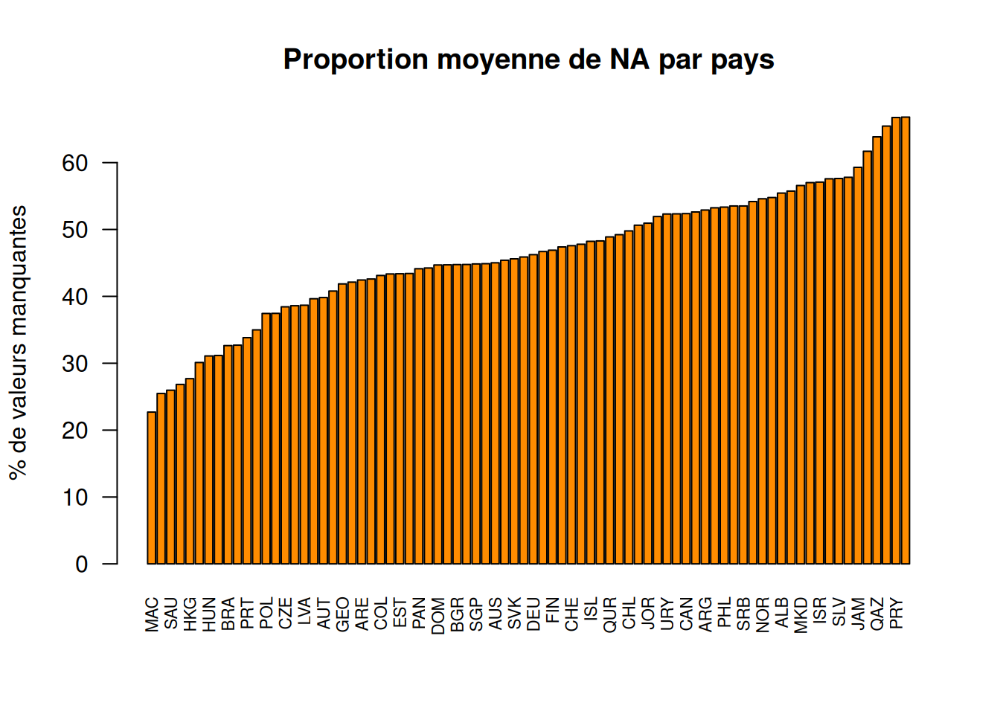
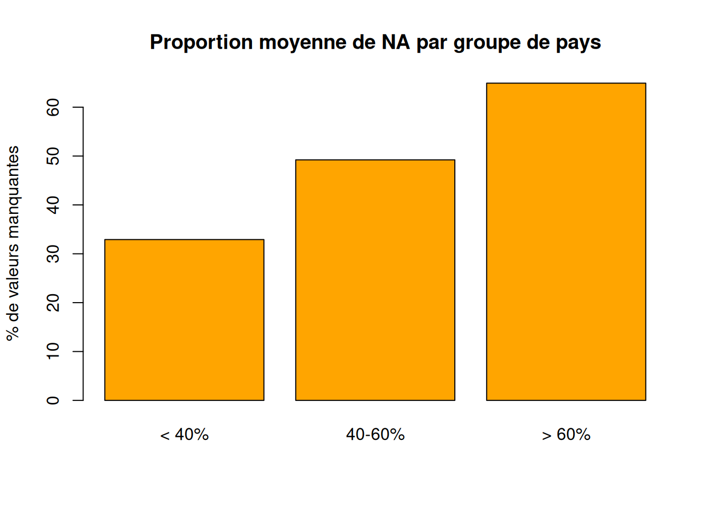
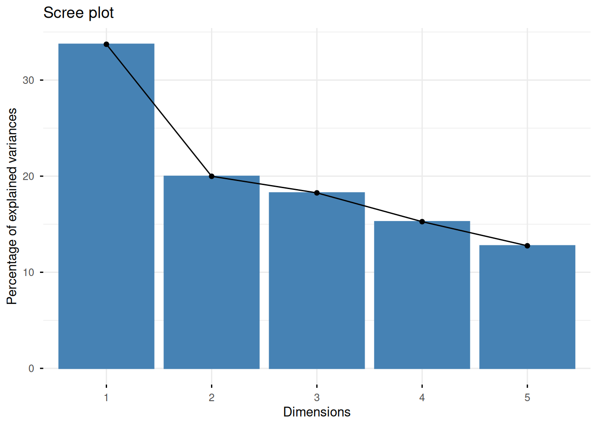

Par souci d’efficacité, le jeu de données contenant plus de 600.000 individus, nous élaborerons nos analyses exploratoires sur un échantillon de 5% de celui-ci.
Intro blabla
Sélection et gestion des variables
–blabla sélection de variables
On décide ici de dicerner plusieurs types de variables, notamment celles en lien direct avec l’enseignent, celles concernant les cours de mathématiques, celles concernant la créativité, et les autres.
On les conserve toute et on aura l’occasion de créer des jeux de données distincts selon les types de variables.
Celles-ci seront nos variables explicatives.
Notes <- data %>%select(starts_with("PV"))Notes_NA <- data %>%select(starts_with("PV"))Notes_NA <-lapply(Notes_NA, as.numeric)moyennes_NA <-lapply(Notes_NA, mean, na.rm =FALSE)
matieres <-c("MATH", #Mathématiques générales"READ", #Lecture"SCIE", #Science"MCCR", #Mathématiques : Changement et relation"MCQN", #Mathématiques : Quantitatif"MCSS", #Mathématiques : Espace et formes"MCUD", #Mathématiques : Incertitude et données"MPEM", #Mathématiques : Employer des concepts mathématiques, définitions et théorèmes"MPFS", #Mathématiques : Formuler des situations mathématiquement"MPIN", #Mathématiques : Interpréter, appliquer et analyser des sorties mathématiques"MPRE"#Mathématiques : Raisonnement)
Par ailleurs, les données de réponses aux questions sont décrites comme une echelle de 1 à 4 pour affirmer un total désacord, un désacord, un accord et un accord total. On aura l’occasion de transformes ces valeurs pour rendre le jeu plus clair, mais seulement après nos études préliminaires pour conserver la possibilité de calculer des statistiques de base (moyenne, mediane, EIQ…).
Regardons maintenant les types de nos variables :
str(data_etude)
On ne remarque pas de gros problème au sein nos types de variables. On peut malgré tout convertir en facteur celles qui ne sont pas destinées à élaborer des calculs.
Etudions les valeurs manquantes selon le pays des individus étudiés afin de mieux nous préparer à l’analyse monovariée :
prop_NA_par_ligne <-rowMeans(is.na(data))pct_NA_par_pays <-tapply(prop_NA_par_ligne, data$CNT, mean) *100pct_NA_par_pays_tri <-sort(pct_NA_par_pays)barplot( pct_NA_par_pays_tri,las =2, col ="darkorange",main ="Proportion moyenne de NA par pays",ylab ="% de valeurs manquantes",cex.names =0.7)

Le nombre de pays étant important, on peut plus simplement regrouper les pays selon le pourcentage de possession de valeurs manquantes. On établit 3 groupes : le premier entre 0 et 40% de valeurs manquantes, le deuxième entre 40 et 60% et le dernier entre 60 et 100%.
barplot( pct_groupes,col ='orange',main ="Proportion moyenne de NA par groupe de pays",ylab ="% de valeurs manquantes")

On peut ainsi noter une grande quantité de valeurs manquantes qui nous pénalisera dans la suite de l’étude si on décide de simplement supprimer les données des étudiants qui ne répondent parfois pas à certaines question. On se proposera alors d’imputer les données par la moyenne.
# Sélection des variables quantitativesvars_quanti <- data_etude %>%select(RELATST, TEACHSUP, ESCS, ST016Q01NA, ST272Q01JA, EXPWB, MOY_MATH, MOY_READ, MOY_SCIE, MOY_GENERALE, ANXMAT,BELONG,BULLIED)# Fonction d'imputation par la moyenneimpute_mean <-function(x){ x[is.na(x)] <-mean(x, na.rm =TRUE)return(x)}vars_quanti_imp <-as.data.frame(lapply(vars_quanti, impute_mean))# Réintégration dans le datasetdata_etude_imp <- data_etudedata_etude_imp[, names(vars_quanti_imp)] <- vars_quanti_imp
Warning in geom_bar(stat = "identity", fill = barfill, color = barcolor, :
Ignoring empty aesthetic: `width`.

fviz_pca_var(res_pca_psy, col.var ="contrib")
Warning: Using `size` aesthetic for lines was deprecated in ggplot2 3.4.0.
ℹ Please use `linewidth` instead.
ℹ The deprecated feature was likely used in the ggpubr package.
Please report the issue at <https://github.com/kassambara/ggpubr/issues>.
Warning: `aes_string()` was deprecated in ggplot2 3.0.0.
ℹ Please use tidy evaluation idioms with `aes()`.
ℹ See also `vignette("ggplot2-in-packages")` for more information.
ℹ The deprecated feature was likely used in the factoextra package.
Please report the issue at <https://github.com/kassambara/factoextra/issues>.
Warning: There were 11 warnings in `summarise()`.
The first warning was:
ℹ In argument: `corr_TEACH = cor(TEACHSUP, MOY_MATH)`.
ℹ In group 10: `CNT = "CAN"`.
Caused by warning in `cor()`:
! the standard deviation is zero
ℹ Run `dplyr::last_dplyr_warnings()` to see the 10 remaining warnings.
# A tibble: 80 × 3
CNT corr_TEACH corr_REL
<chr> <dbl> <dbl>
1 ALB 0.110 0.157
2 ARE 0.128 0.162
3 ARG 0.00266 0.0293
4 AUS 0.184 0.208
5 AUT -0.0631 0.0573
6 BEL -0.0181 0.0534
7 BGR -0.0551 0.0292
8 BRA 0.0587 0.136
9 BRN 0.115 NA
10 CAN NA NA
# ℹ 70 more rows